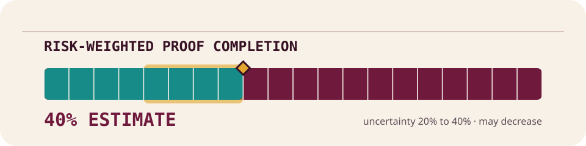

Every update begins in everyday language and assumes no mathematics background. Open its technical details only when you want the exact Lean scope, theorem pins, and limits.
Use an RSS or Atom reader
Your reader checks this address for new milestones. No email address or PNP Labs account is needed.
This is an editorial planning estimate, updated at each milestone. It is not a probability that the project is correct, a confidence score, or a mathematical claim. It may go down when new work is discovered.

· earned milestone 47
The builder now opens the second major checklist block
Imagine this project as a machine that writes a very long checklist of simple logical conditions. The first major checklist block was already complete. This milestone verifies that the machine writes one divider marking the start of the second block, then moves to the exact position where the next item belongs.
This step adds only that divider. It does not write the next checklist item, finish the second block, complete the full checklist-building machine, or prove that P equals NP.
Verified scope: For every fixed concrete polynomial-time verifier, one literal finite work machine composes the complete first-constraint padding run with the reused selected 59-rule Sep appender and 45-rule cursor advance through one outer total nine-symbol WorkChain bridge. The global table has exactly 4554 plus the sixteen inherited/generated unary-evaluator rule counts. Every raw input follows exact prefix, appender, cursor, bridge, suffix, and combined traces; emits exactly the Sep beginning the second scheduled constraint; preserves encodedFormula.take (2 * (FormulaWidth + 37)); and retains coordinate FormulaVariableSlotBound + 1 + FormulaClauseSlotsPerConstraint * FormulaTokensPerClause + 1, whose direct next schedule token is T. The external compiled bound evaluates to BuilderFirstConstraintPaddingRun.rawTimeBound + 534 + 24 * n + 12 * FormulaWidth + 12 * cursorWord.length. Compiled exact, bounded, blank-equivalent, accepting, non-timeout, malformed-workspace, both unlaunched-endpoint, and one-step-short results are proved. All 48 new public declarations plus eight reviewed reused separator/cursor interfaces are axiom-audited: 14 have empty closure, 11 use only propext, and 31 use only propext and Quot.sound, with no project axiom or Classical.choice.
Boundary: This milestone emits exactly one token: the fixed Sep that starts the second scheduled constraint. It observes but does not emit the following T, does not emit the first literal or traverse the second constraint, does not implement a general dynamic formula cursor or raw decoder for arbitrary schedule coordinates, does not emit the remaining formula body, and does not construct a complete formula builder or FunctionProgram.RawRefinement, package a concrete PolynomialReduction, establish CNFSAT NP-hardness or NP-completeness, establish CNFSAT in P, or prove P = NP.
Reviewed theorem pins: 40
Core source: commit 8ac394c0fb19fbaabec883a498a1ad35d730b77f, tree 9dacf36b058e09470f4790536d37b0480916df8c, status PNP-FORMAL-RECONSTRUCTION-STATUS-2026-07-22-70.
Site release and live deployment identity are verified separately by the release seal and deployment provenance record.
These coordinates and hashes establish artefact identity only; they do not establish theorem correctness.
· earned milestone 46
The builder now reaches the second major checklist block
This project is checking a step-by-step method that turns a computer task into a long checklist of simple yes-or-no conditions. Each major block has a fixed amount of reserved space. This update confirms that the builder can cross all the unused space left in the first major block without changing the checklist, then stop at the exact marker where the second block begins.
Think of completing the first section of a very large fixed-size form and moving across every unused box until you reach the next section divider. The divider is seen but not printed by this step, and the next item is not started. The full builder is still incomplete, and this update does not prove that P equals NP.
Verified scope: For every fixed concrete polynomial-time verifier, one literal finite work machine composes the fifth-clause padding predecessor with two structurally generated unary evaluators, the reused 25-rule PaddingCountdown machine, and three total nine-symbol WorkChain bridges. Its table has exactly 4432 plus sixteen inherited/generated unary-evaluator rule counts. For every raw bitstring it traverses exactly (FormulaVariableSlotBound - 2) * (FormulaVariableSlotBound + 2) * FormulaTokensPerClause = (FormulaClauseSlotsPerConstraint - 5) * FormulaTokensPerClause remaining empty token opportunities of the first scheduled constraint without emitting a token, preserves encodedFormula.take (2 * (FormulaWidth + 36)), and retains coordinate FormulaVariableSlotBound + 1 + FormulaClauseSlotsPerConstraint * FormulaTokensPerClause. Direct schedule lookup and the specification cursor prove that every traversed opportunity is padding and the endpoint is the Sep beginning the second scheduled constraint. The external compiled bound is BuilderFifthClausePaddingRun.rawTimeBound + 18 + six times the count-evaluator work, countdown bound, and target-evaluator work. Compiled exact, bounded, blank-equivalent, accepting, non-timeout, malformed-countdown, unlaunched-predecessor, and one-step-short results are proved. All 65 new public declarations and three reused countdown interfaces are axiom-audited: 26 have empty closure, 9 use only propext, and 33 use only propext and Quot.sound, with no project axiom or Classical.choice.
Boundary: This milestone traverses only the remaining empty clause rectangles of the first scheduled constraint and retains the Sep beginning the second scheduled constraint. It observes but does not emit that separator, does not emit the next constraint's first literal, implement a general dynamic formula cursor or raw decoder for arbitrary schedule coordinates, emit the remaining formula body, construct a complete formula builder or FunctionProgram.RawRefinement, package a concrete PolynomialReduction, establish CNFSAT NP-hardness or NP-completeness, establish CNFSAT in P, or prove P = NP.
Reviewed theorem pins: 39
Core source: commit 5a2cf2b0bea9568d7361336fa5f8f197246a2f9c, tree 2871fea51d6f6fc0d150a71d67e5eb99458ba26e, status PNP-FORMAL-RECONSTRUCTION-STATUS-2026-07-22-69.
Site release and live deployment identity are verified separately by the release seal and deployment provenance record.
These coordinates and hashes establish artefact identity only; they do not establish theorem correctness.
· earned milestone 45
The builder now crosses a whole intentionally empty section
This project is building, and checking, a step-by-step method that turns a computer task into a long list of simple yes-or-no checks. Some places in that list are deliberately left empty so every section has a predictable size. This update confirms that the builder can cross one whole empty section without changing the list and stop at the next exact boundary.
Think of a form with fixed-size boxes: the machine can now move across one unused box and arrive at the next unused box without writing anything. This is a small construction milestone. It does not reach the next meaningful check, finish the builder, or prove that P equals NP.
Verified scope: For every fixed concrete polynomial-time verifier, one literal finite work machine composes the fourth-clause padding predecessor with two structurally generated unary evaluators, the reused 25-rule PaddingCountdown machine, and three total nine-symbol WorkChain bridges. Its table has exactly 4380 plus fourteen inherited/generated unary-evaluator rule counts. For every raw bitstring it traverses exactly FormulaTokensPerClause padding opportunities in the intentionally empty fifth fixed-width clause rectangle without emitting a token, preserves encodedFormula.take (2 * (FormulaWidth + 36)), and retains coordinate FormulaVariableSlotBound + 1 + 5 * FormulaTokensPerClause. Direct schedule lookup and the specification cursor prove that every traversed fifth-slot opportunity and the first opportunity in the intentionally empty sixth slot are padding. The external compiled bound is BuilderFourthClausePaddingRun.rawTimeBound + 18 + six times the count-evaluator work, countdown bound, and target-evaluator work. Compiled exact, bounded, blank-equivalent, accepting, non-timeout, malformed-countdown, unlaunched-predecessor, and one-step-short results are proved. All 65 new public declarations and three reused countdown interfaces are axiom-audited: 28 have empty closure, 9 use only propext, and 31 use only propext and Quot.sound, with no project axiom or Classical.choice.
Boundary: This milestone traverses only the intentionally empty fifth clause rectangle and retains the first opportunity in the intentionally empty sixth clause rectangle. It does not traverse that sixth rectangle, reach the next constraint, emit another token, implement a general dynamic formula cursor or raw decoder for arbitrary schedule coordinates, emit the remaining formula body, construct a complete formula builder or FunctionProgram.RawRefinement, package a concrete PolynomialReduction, establish CNFSAT NP-hardness or NP-completeness, establish CNFSAT in P, or prove P = NP.
Reviewed theorem pins: 39
Core source: commit ad98889b806c4726e3d61c1ab58adf589782a971, tree 87dc990e9d04ec050c93260d5d78aea5a5853ef8, status PNP-FORMAL-RECONSTRUCTION-STATUS-2026-07-22-68.
Site release and live deployment identity are verified separately by the release seal and deployment provenance record.
These coordinates and hashes establish artefact identity only; they do not establish theorem correctness.
· earned milestone 44
The builder now clears the unused space after section four
To check a computer program with mathematics, this project turns the program and its input into a long checklist of yes-or-no conditions. The fourth checklist section was already complete. This milestone verifies that the builder can move across every blank position reserved after it without writing anything, stop at the exact boundary of the next reserved block, and fail safely if its workspace is damaged.
Think of a document template with fixed-size boxes: the builder has crossed the unused part of the fourth box and landed at the next box, which is also intentionally blank. It has not started the next meaningful checklist section, finished the full builder, or established the project’s P-versus-NP claim.
Verified scope: For every fixed concrete polynomial-time verifier, one literal finite work machine composes the complete fourth-clause prefix with two structurally generated unary evaluators, the reused 25-rule PaddingCountdown machine, and three total nine-symbol WorkChain bridges. Its table has exactly 4328 plus twelve inherited/generated unary-evaluator rule counts. For every raw bitstring it traverses exactly FormulaTokensPerClause - 9 padding opportunities without emitting a token, preserves encodedFormula.take (2 * (FormulaWidth + 36)), and retains coordinate FormulaVariableSlotBound + 1 + 4 * FormulaTokensPerClause. Direct schedule lookup and the specification cursor both prove that this first opportunity in the intentionally empty fifth fixed-width clause slot is padding. The external compiled bound is BuilderFourthClausePrefix.rawTimeBound + 18 + six times the count-evaluator work, countdown bound, and target-evaluator work. Compiled exact, bounded, blank-equivalent, accepting, non-timeout, malformed-countdown, unlaunched-predecessor, and one-step-short results are proved. All 65 new public declarations and three reused countdown interfaces are axiom-audited: 26 have empty closure, 9 use only propext, and 33 use only propext and Quot.sound, with no project axiom or Classical.choice.
Boundary: This milestone traverses only the remaining padding in clause four and retains the first opportunity in the intentionally empty fifth clause rectangle. It does not traverse that empty rectangle, reach the next constraint, emit another token, implement a general dynamic formula cursor or raw decoder for arbitrary schedule coordinates, emit the remaining formula body, construct a complete formula builder or FunctionProgram.RawRefinement, package a concrete PolynomialReduction, establish CNFSAT NP-hardness or NP-completeness, establish CNFSAT in P, or prove P = NP.
Reviewed theorem pins: 39
Core source: commit 5377b99658a756f60a8b36d19896be579761d8cd, tree 8218321ed58d3e617a472db560c9c0bfc6dd111c, status PNP-FORMAL-RECONSTRUCTION-STATUS-2026-07-21-67.
Site release and live deployment identity are verified separately by the release seal and deployment provenance record.
These coordinates and hashes establish artefact identity only; they do not establish theorem correctness.
· earned milestone 43
The fourth checklist section is now complete
To check a computer program with mathematics, this project turns the program and its input into a long checklist of yes-or-no conditions. This milestone verifies that the checklist builder can add the closing marker to the fourth section, move to the first unused space after it, and stop safely if its workspace is damaged.
Think of a document generator: the fourth section now has its heading, both required lines, and its closing mark. The larger document is still far from finished. This update does not complete the full checklist builder or establish the project’s P-versus-NP claim.
Verified scope: For every fixed concrete polynomial-time verifier, one literal finite work machine composes the fourth-clause second-literal prefix with a selected 59-rule Finish appender, one existing 45-rule cursor advance, and two total nine-symbol WorkChain bridges. The selected suffix has exactly 113 rules and the global table has exactly 4276 plus the ten inherited/generated unary-evaluator rule counts. Every raw input follows exact prefix, appender, cursor, bridge, suffix, and combined traces; emits the Finish that completes clause four; preserves encodedFormula.take (2 * (FormulaWidth + 36)); and retains coordinate FormulaVariableSlotBound + 1 + 3 * FormulaTokensPerClause + 9, whose direct next schedule token is padding. The external compiled bound evaluates to BuilderFourthClauseSecondLiteralPrefix.rawTimeBound + 618 + 24 * n + 12 * FormulaWidth + 12 * BuilderFourthClauseSeparatorStep.cursorWord.length. Compiled exact, bounded, blank-equivalent, accepting, non-timeout, malformed-workspace, both unlaunched-endpoint, and one-step-short results are proved. All 55 new public declarations and two cursor dead-state facts are axiom-audited: 14 have empty closure, 10 use only propext, and 33 use only propext and Quot.sound, with no project axiom or Classical.choice.
Boundary: This milestone emits exactly the fixed Finish terminator that completes clause four and advances to its first padding coordinate. It does not traverse clause-four padding, implement a general dynamic formula cursor or raw decoder for arbitrary schedule coordinates, emit the remaining formula body, construct a complete formula builder or FunctionProgram.RawRefinement, package a concrete PolynomialReduction, establish CNFSAT NP-hardness or NP-completeness, establish CNFSAT in P, or prove P = NP.
Reviewed theorem pins: 41
Core source: commit c9f4b9b684b18b5fed4a4256133bcfdb83f3ad75, tree e69c76ac4a05c7895cde0ba70d6e1af22e5b7512, status PNP-FORMAL-RECONSTRUCTION-STATUS-2026-07-21-66.
Site release and live deployment identity are verified separately by the release seal and deployment provenance record.
These coordinates and hashes establish artefact identity only; they do not establish theorem correctness.
· earned milestone 42
The fourth section now contains its second complete item
To check a computer program with mathematics, this project turns the program and its input into a long checklist of yes-or-no conditions. This milestone verifies that the checklist builder can add the second complete item in the fourth section, move to the exact place where the section-ending marker belongs, and fail safely if its workspace is damaged.
Think of a document generator: the fourth section now has two checked lines, but its closing marker has not yet been written. This is one small verified construction step. The fourth section and the full checklist are still unfinished, and the project’s much larger claim about P versus NP is not established.
Verified scope: For every fixed concrete polynomial-time verifier, one literal finite work machine composes the complete fourth-clause first-literal prefix with the reused 479-rule F/T/T/F appender/cursor suffix through one outer total nine-symbol WorkChain bridge. The global table has exactly 4154 plus the ten inherited/generated unary-evaluator rule counts. Every raw input follows exact prefix, appender, cursor, bridge, suffix, and combined traces; emits the complete second negative literal on variable two in clause four; preserves encodedFormula.take (2 * (FormulaWidth + 35)); and retains coordinate FormulaVariableSlotBound + 1 + 3 * FormulaTokensPerClause + 8, whose direct next schedule token is Finish. The external compiled bound evaluates to BuilderFourthClauseFirstLiteralPrefix.rawTimeBound + 2232 + 96 * n + 48 * FormulaWidth + 48 * BuilderFourthClauseSeparatorStep.cursorWord.length. Compiled exact, bounded, blank-equivalent, accepting, non-timeout, malformed-workspace, all eight unlaunched-endpoint, and one-step-short results are proved. All 124 new public declarations, 21 reviewed reused suffix interfaces, and two cursor dead-state facts are axiom-audited: 46 have empty closure, 32 use only propext, and 69 use only propext and Quot.sound, with no project axiom or Classical.choice.
Boundary: This milestone emits exactly the fixed second negative literal on variable two in clause four. It observes but does not emit the following Finish, does not complete clause four, does not implement a general dynamic formula cursor or raw decoder for arbitrary schedule coordinates, does not emit the remaining formula body, and does not construct a complete formula builder or FunctionProgram.RawRefinement, package a concrete PolynomialReduction, establish CNFSAT NP-hardness or NP-completeness, establish CNFSAT in P, or prove P = NP.
Reviewed theorem pins: 92
Core source: commit 3a56b27add47f7991b670e6e0fb9bb302d78cd04, tree b17cdd6861c91234de106474b7e5fa03277cb37f, status PNP-FORMAL-RECONSTRUCTION-STATUS-2026-07-21-65.
Site release and live deployment identity are verified separately by the release seal and deployment provenance record.
These coordinates and hashes establish artefact identity only; they do not establish theorem correctness.
· earned milestone 41
The fourth section now contains its first complete item
To check a computer program with mathematics, this project turns the program and its input into a long checklist of yes-or-no conditions. This milestone verifies that the checklist builder can place the first complete item in the fourth section, stop exactly where the next item should begin, and fail safely if its workspace is damaged.
Think of a document generator: the fourth section heading was already in place, and this update checks the first full line beneath it. This is one small verified construction step. The fourth section and the full checklist are still unfinished, and the project’s much larger claim about P versus NP is not established.
Verified scope: For every fixed concrete polynomial-time verifier, one literal finite work machine composes the complete fourth-clause separator prefix with the reused 357-rule F/T/F appender/cursor suffix through one outer total nine-symbol WorkChain bridge. The global table has exactly 3666 plus the ten inherited/generated unary-evaluator rule counts. Every raw input follows exact prefix, appender, cursor, bridge, suffix, and combined traces; emits the complete first negative literal on variable one in clause four; preserves encodedFormula.take (2 * (FormulaWidth + 31)); and retains coordinate FormulaVariableSlotBound + 1 + 3 * FormulaTokensPerClause + 4, whose direct next schedule token is F. The external compiled bound evaluates to BuilderFourthClauseSeparatorStep.rawTimeBound + 1422 + 72 * n + 36 * FormulaWidth + 36 * cursorWord.length. Compiled exact, bounded, blank-equivalent, accepting, non-timeout, malformed-workspace, all six unlaunched-endpoint, and one-step-short results are proved. All 97 new public declarations, 16 reviewed reused suffix interfaces, and two cursor dead-state facts are axiom-audited: 33 have empty closure, 25 use only propext, and 57 use only propext and Quot.sound, with no project axiom or Classical.choice.
Boundary: This milestone emits exactly the fixed first negative literal on variable one in clause four. It observes but does not emit the following second-literal F, does not complete clause four, does not implement a general dynamic formula cursor or raw decoder for arbitrary schedule coordinates, does not emit the remaining formula body, and does not construct a complete formula builder or FunctionProgram.RawRefinement, package a concrete PolynomialReduction, establish CNFSAT NP-hardness or NP-completeness, establish CNFSAT in P, or prove P = NP.
Reviewed theorem pins: 75
Core source: commit 3112ca90d74d58116dc53ea5300082d0caa63c0e, tree 00affbe8d76a9c28b3d6aa98384d43e23aacd71f, status PNP-FORMAL-RECONSTRUCTION-STATUS-2026-07-21-64.
Site release and live deployment identity are verified separately by the release seal and deployment provenance record.
These coordinates and hashes establish artefact identity only; they do not establish theorem correctness.
· earned milestone 40
The generated checklist now reaches its fourth section
This project turns a computer program and its input into a long checklist of logical conditions. The work is being verified one small construction step at a time. This milestone confirms that the builder can add the marker that starts the fourth section of that checklist and then move to the correct place for the next symbol.
In everyday terms, it is like checking that a document generator placed the next section break in exactly the right spot. It is useful progress, but it does not complete the fourth section, finish the full generator, or establish the project’s overall mathematical claim.
Verified scope: For every fixed concrete polynomial-time verifier, one literal finite work machine composes the complete third-clause padding run with the reused selected 59-rule Sep appender and 45-rule cursor advance through one outer total nine-symbol WorkChain bridge. The global table has exactly 3300 plus the ten inherited/generated unary-evaluator rule counts. Every raw input follows exact prefix, appender, cursor, bridge, suffix, and combined traces; emits exactly the fourth-clause Sep; preserves encodedFormula.take (2 * (FormulaWidth + 28)); and retains coordinate FormulaVariableSlotBound + 1 + 3 * FormulaTokensPerClause + 1, whose direct next schedule token is F. The external compiled bound evaluates to BuilderThirdClausePaddingRun.rawTimeBound + 426 + 24 * n + 12 * FormulaWidth + 12 * cursorWord.length. Compiled exact, bounded, blank-equivalent, accepting, non-timeout, malformed-workspace, both unlaunched-endpoint, and one-step-short results are proved. All 48 new public declarations plus eight reviewed reused separator/cursor interfaces are axiom-audited: 14 have empty closure, 11 use only propext, and 31 use only propext and Quot.sound, with no project axiom or Classical.choice.
Boundary: This milestone emits exactly one token: the fixed Sep that starts clause four. It observes but does not emit the following F, does not complete clause four, does not implement a general dynamic formula cursor or raw decoder for arbitrary schedule coordinates, does not emit the remaining formula body, and does not construct a complete formula builder or FunctionProgram.RawRefinement, package a concrete PolynomialReduction, establish CNFSAT NP-hardness or NP-completeness, establish CNFSAT in P, or prove P = NP.
Reviewed theorem pins: 40
Core source: commit 522c8da0f4add7b310659dd28c3dd3bd492d5337, tree 43ab837054ffd8dfb3d2bf34fa8458779c4ee4b0, status PNP-FORMAL-RECONSTRUCTION-STATUS-2026-07-20-63.